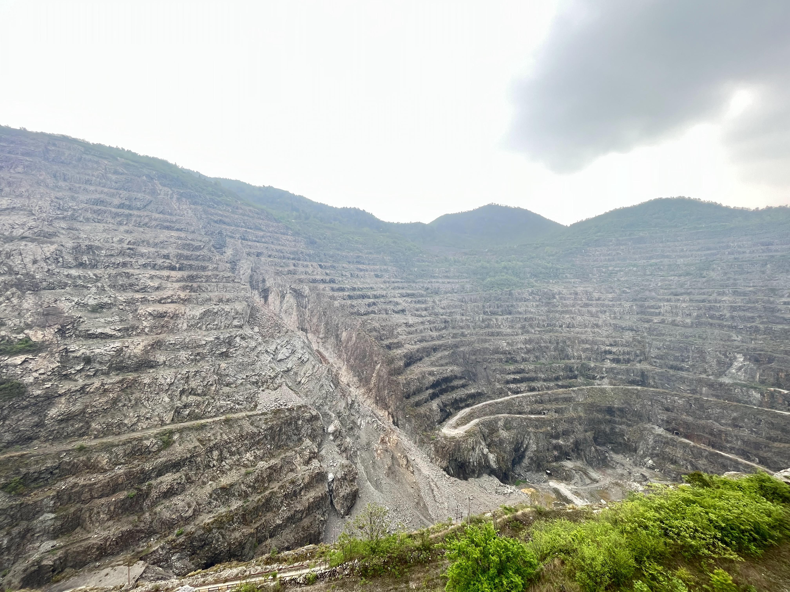

黄石国家矿山公园
黄石国家矿山公园位于湖北省黄石市铁山区境内，“矿冶大峡谷”为黄石国家矿山公园核心景观，形如一只硕大的倒葫芦，东西长2200米、南北宽550米、最大落差444米、坑口面积达108万平方米，被誉为“亚洲第一天坑”。2010年2月22日，黄石国家矿山公园被评为国家AAAA级景区。
YELLOWSTONE
黄石国家矿山公园位于湖北省黄石市铁山区境内，“矿冶大峡谷”为黄石国家矿山公园核心景观，形如一只硕大的倒葫芦，东西长2200米、南北宽550米、最大落差444米、坑口面积达108万平方米，被誉为“亚洲第一天坑”。2010年2月22日，黄石国家矿山公园被评为国家AAAA级景区。
Selectd works